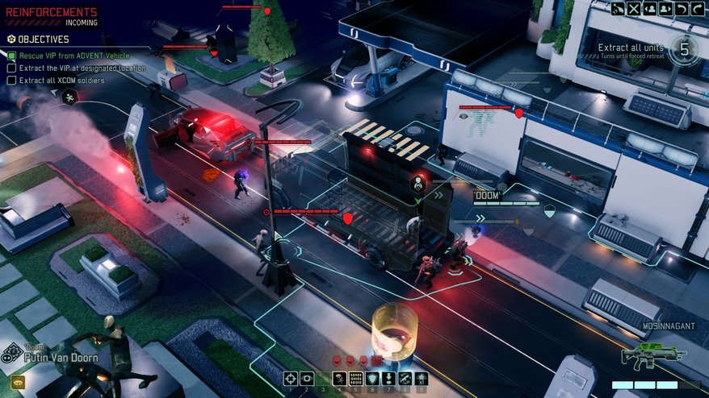

X COM2
The Safety of the World Is in Your Hand

Being popular since the first version XCOM: Enemy Unknown, XCOM: Enemy Unknown had published in 2012 and bring a lot of award in 2012. XCOM has famous about the strategies, action, and graphic, which made the gamer community going crazy. And now, they coming up with their new version XCOM 2, which was published in November, 2015. XCOM 2 bringing the gamer to the 20 years later after the last event on XCOM: Enemy Unknown happened, when human being had lost in the defend from the alien’s invasion, and the world order has been changed.
In XCOM 2, you will be the leader of the secret organization XCOM, which being forgotten by the major of human kind. Now, your mission is leading the XCOM to fight against the alien, and bringing back the freedom to human kind.
Difference with the first version, now you are the invader role to go to invade the alien planet, instead of protecting the Earth. The players have to use the limited resources to develop your base and also avoiding the attack of the alien to your mobile base. Furthermore, you must combine the sneaky movement with the weapons skill to defeat the large amount of enemy.
The producer Firaxis Games promises that XCOM 2 will satisfice the gamer with the good graphic and good storylines.
Best Regards for the Game community,
Vinh Le